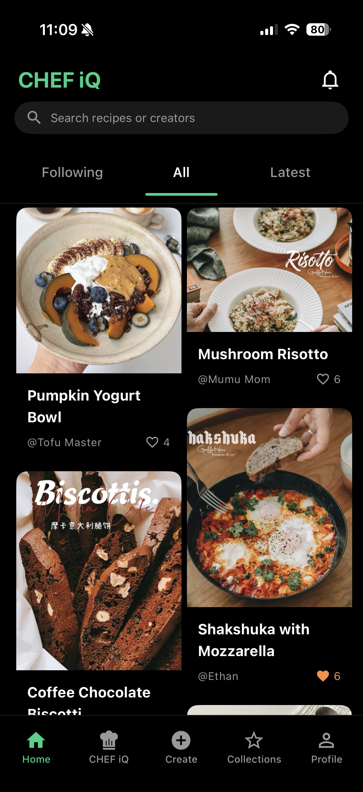
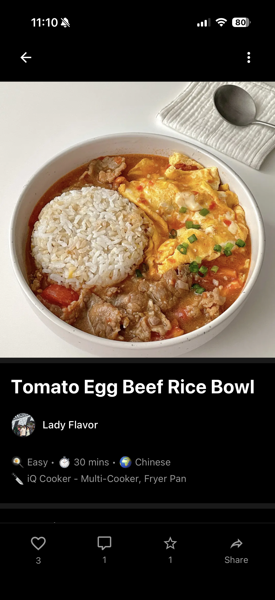
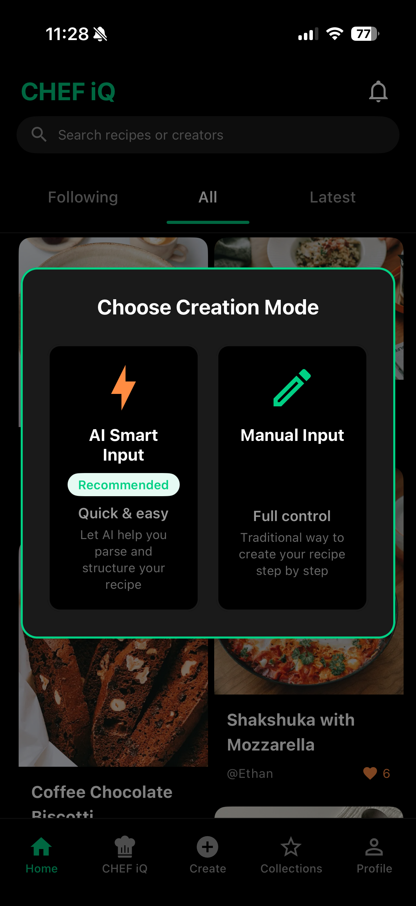
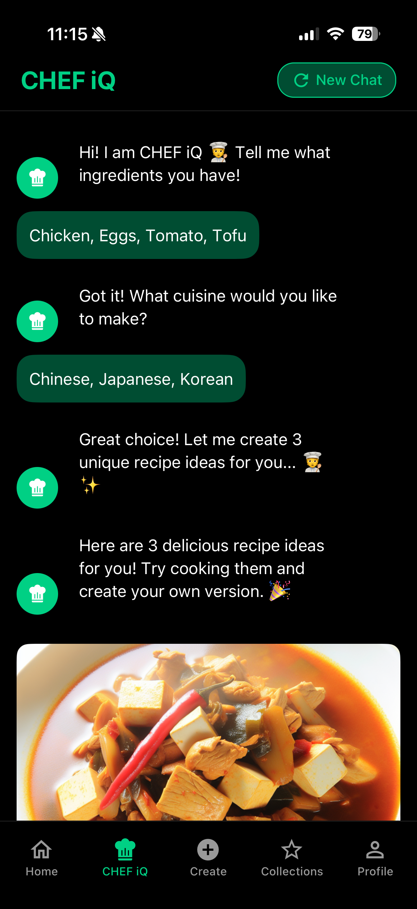
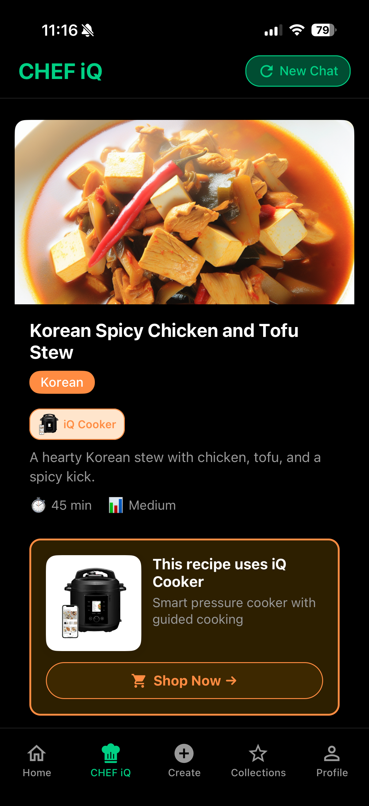
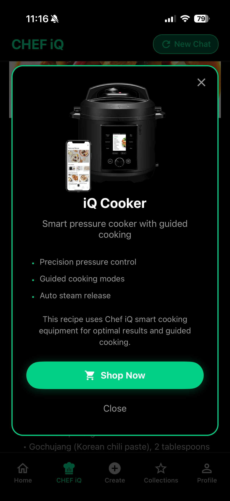

Your AI-Powered
Culinary Partner
Discover recipes, create with AI, and master guided cooking with the ChefiQ Studio app and iQ Cooker.
-Picsart-BackgroundRemover.png)
Explore Amazing Recipes
Browse a beautiful feed of recipes from our community. Find inspiration for your next meal with stunning food photography and detailed instructions.
- ✓ Like, comment, and save favorites
- ✓ Follow your favorite creators
- ✓ Discover trending recipes


Every Detail Matters
Every recipe includes complete details: ingredients, cooking time, difficulty level, and equipment needed. See nutritional information and user reviews.
Create Your Way
Choose between AI Smart Input for quick recipe creation or Manual Input for full control. Let AI help structure your recipes or create them traditionally - you decide.


Chat with Your AI Chef
Just tell our AI what ingredients you have at home. It understands your preferences, dietary restrictions, and cooking skill level. Our AI analyzes your ingredients and recommends 3 personalized recipe options based on your preferences and cuisine style. Each suggestion includes complete cooking instructions, timing, and equipment requirements.
3 Perfect Recipe Options
Get instant access to three carefully curated recipe suggestions tailored to your available ingredients, cooking preferences, and skill level. Each option comes with detailed instructions and timing to ensure perfect results every time.


One-Tap Equipment Purchase
When a recipe requires Chef iQ equipment like the iQ Cooker, simply tap to purchase directly through the app. Seamlessly integrate premium cooking tools into your culinary journey.
- ✓ Equipment suggestions based on recipes
- ✓ Quick purchase integration
- ✓ Automatic recipe sync to devices